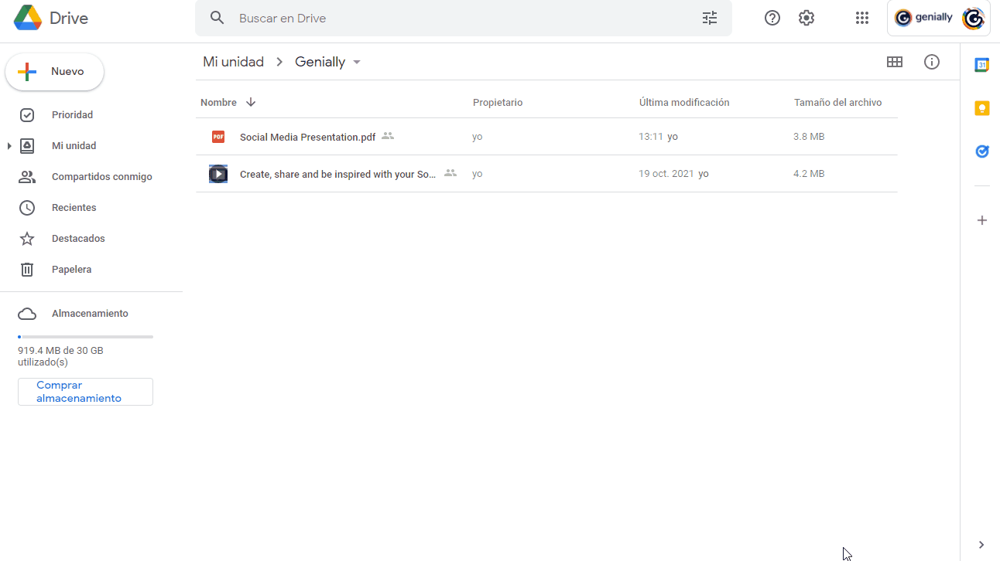
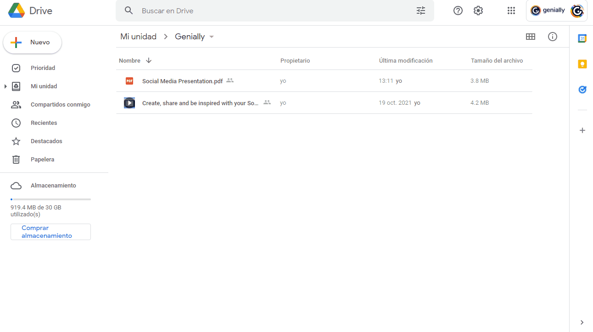

Insertando Elementos en Genially
Insertar un PDF en un Genially
Para insertar un PDF en Genially, es necesario que esté guardado en Google Drive, así que eso es lo primero que necesitarás hacer: guardar en tu espacio de Drive el PDF que quieras mostrar en tu creación. Después hay que copiar el código del archivo en Google Drive y pegarlo en Genially, proceso que explicaremos a continuación.
1. Inicia sesión en Google Drive.
2. Haz clic derecho sobre el PDF que quieres mostrar en tu genially y elige la opción Compartir.
3. En la ventana que aparece, ve a Obtener enlace y selecciona Cambiar.
4. Se desplegarán varias opciones para que elijas con quién quieres compartir tu archivo. Selecciona Cualquier persona con el enlace.
5. Guarda los cambios.

6. Haz clic derecho en el PDF y elige 'Vista Previa'.
7. En la página que aparece, haz clic en el icono de menú de tres puntos que ves en la esquina superior derecha y selecciona ‘Abrir en una ventana nueva’.
8. En la nueva pestaña que se abre, vuelve a hacer clic en los tres puntos de la esquina superior derecha.
9. Elige la opción 'Insertar elemento'.
10. Copia el código que aparece.

Obra publicada con Licencia Creative Commons Reconocimiento Compartir igual 4.0